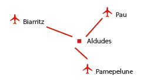
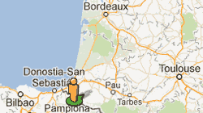

<div class="row">
   <div class="page-header">
     <h1>Localisation<small> à 60 kms des plages, en plein coeur de la Navarre</small></h1>
 </div>
</div>

<div class="row">
    <div class="span12">
        <h2>Acces</h2>
        <h3>Aéroports</h3>
        <div>
            <p>Aéroports Biarritz Pau et Pampelune en Espagne, à moins de 40 minutes
            </p>      
        </div>
    </div>
</div>

<div class="row">
    <div class="span8 offset2" style="text-align: center;">
        <!-- Google Map -->
        <iframe width="425" height="350" frameborder="0" scrolling="no" marginheight="0" marginwidth="0" src="https://maps.google.com/maps/ms?msa=0&amp;msid=205541543274050318936.0004d7cbc5b5b694d271f&amp;ie=UTF8&amp;t=h&amp;ll=43.098813,-1.427912&amp;spn=0,0&amp;output=embed"></iframe>
        <br /><small>Afficher <a href="https://maps.google.com/maps/ms?msa=0&amp;msid=205541543274050318936.0004d7cbc5b5b694d271f&amp;ie=UTF8&amp;t=h&amp;ll=43.098813,-1.427912&amp;spn=0,0&amp;source=embed" style="color:#0000FF;text-align:left">Sites Les Aldudes</a> sur une carte plus grande</small>
        <! -- /Google Map -->
    </div>
</div>

<!--
     <a href="http://goo.gl/maps/0jV0K" target="_blank"></a>
 -->